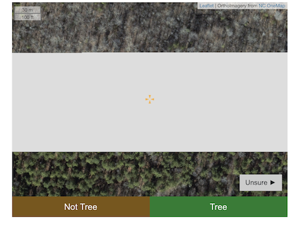

How is land use changing in Orange County? The Orange County Commission for the Environment is measuring tree cover in certain areas in Orange County in order to understand it has changed and to establish baselines for future studies. Using a methodology similar to iTree canopy, this application allows citizens to identify randomly sampled points as tree or not tree. These data will provide an estimate of tree cover on county-owned property and in the county's rural buffer.
Supporting Organization: Orange County Commission for the Environment
Code base: ocForestCover at Github
These data are being used by the Orange County Commission for the Environment to create the State of the Environment report.
You're identifying the point at the center of the crosshairs as TREE or NOT TREE.
This could be:
The methodology of this study is described in the following papers:
Kaspar, J., Kendal, D., Sore, R., & Livesley, S. J. (2017). Random point sampling to detect gain and loss in tree canopy cover in response to urban densification. Urban Forestry & Urban Greening, 24, 26-34.
Parmehr, E. G., Amati, M., Taylor, E. J., & Livesley, S. J. (2016). Estimation of urban tree canopy cover using random point sampling and remote sensing methods. Urban Forestry & Urban Greening, 20, 160-171.
Once registered and logged in, you will identify the point at the center of the crosshairsas TREE or NOT TREE. You select UNSURE if, for example, the images under the identification point do not load. When you're done identifying for the day, just click log out.
Sometimes due to shadows or lack of image clarity, it may be challenging to distinguish whether a point is a tree or not. The images were generally obtained during winter months, so you will need to identify deciduous trees without their green leaves as clue. Just use your best judgement.
We have provided several example images below.
|  | UNSURE: the images under crosshairs did not load. |
| TREE: The crosshairs are over a deciduous tree without leaves. | |
| UNSURE: Due to the shadow from the pine trees, it is difficult to tell whether there is a tree under the crosshairs. | |
| NOT TREE | |
| TREE: The light gray area under and around the crosshairs, plus the shadows of the trunks, indicate tree. | |
| TREE: We went with tree, but due to the shadows this was a tough call. | |
| NOT TREE: Being on the edge of a field, this is also difficult, but we went with not tree. | |
| TREE: Another difficult call, but the gray shape, shadows of a trunk, and neighboring trees, suggests TREE for this one. |